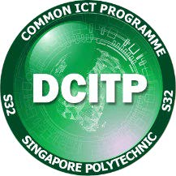

The SP experience
In Singapore Polytechnic (SP), we are offered plenty of courses from different domains ranging from engineering, business, computing, to navel. As one of the oldest Polytechnic in Singapore, the campus consists of many old and new buildings, with lessons all taking place in air-conditioned rooms. There are 6 food courts in total with several fast food chains also opened in the campus such as Macdonalds, Starbucks, and KFC. The campus itself is so big that when a person rides an MRT train heading towards the Dover station, the train is still running at its highest speed and is yet to decelerate when the train reach the campus. So far in my expereince in SP, the modules are more or less fine and are not too stressful, even with the Astronomy CCA I joined out of the many CCAs available. As I am currently pursing a course under the School of Computing (SoC), there are a few other courses offered under SoC that are within the field of IT but are still different in terms of the speciality. I am going to give a brief description of what each course under the SoC is about and what I think about them.
|
Courses offered under School of Computing |
|
|---|---|
Diploma in Applied AI & AnalyticsThis is the course I am pursuing. It specialises in developing AI application in the real world to solve problems. We will be learning a lot of AI related concepts such as machine learning, neural networks, and much more. I believe pursuing this course allows us to enter the job market that is increasing in demand, thereby allowing us to easily get a job with ease. It is the newest course in SoC, and is one of the 3 speciality in SoC. |

Diploma in Common ICT ProgrammeThis course is designed for people who wants to pursue a study in IT but is unsure of what they want exactly. This course is structured such that students in this course will gain an overview of the world of IT, and they will then have to decide where to go afterwards. Students will have to choose 1 of the any 3 courses in SoC after the first semester which they will pursue for the rest of their Polytechnic life. I believe this course is for people who wants to study and work in the field of IT but have no clear idea of their speciality. |
Diploma in Infocomm Security ManagementThis course focues on the security of the IT world. Students will develop the softskills and technical skills necessary to safeguard digital information. Students will learn many key concepts such as cryptopgrahy, networking, digital forensics, and more. They will also experience the simulated cyberattack in the labs. This course is designed for people who are willing to learn more about cybersecurity and are always willing to figure out ways to attack or defend their systems. It is also one of the 3 speciality in SoC. |
Diploma in Information TechnologyThis course offers students to learn about the backdrops in the IT world. It is focused on software and applications development. They will then have to pick an elective to specialise in. They can choose to specialise in software development, user experience, or immersive simulation. The course is mainly on the coding of software or application. I believe it is for people who mainly wants to do casual software, application, and or web development, and it is one of the 3 speciality in SoC. |
Updated on 6 June 2022 | |